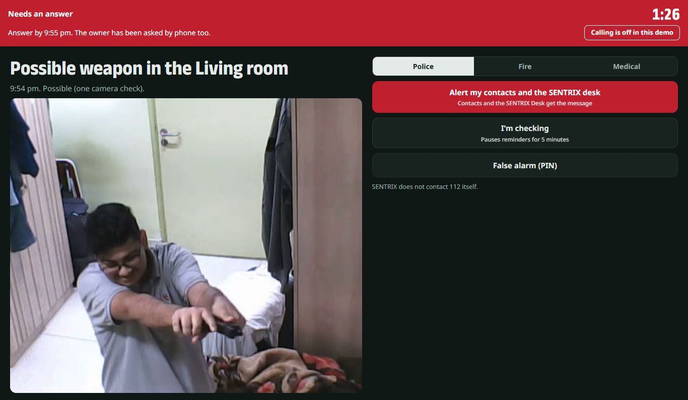
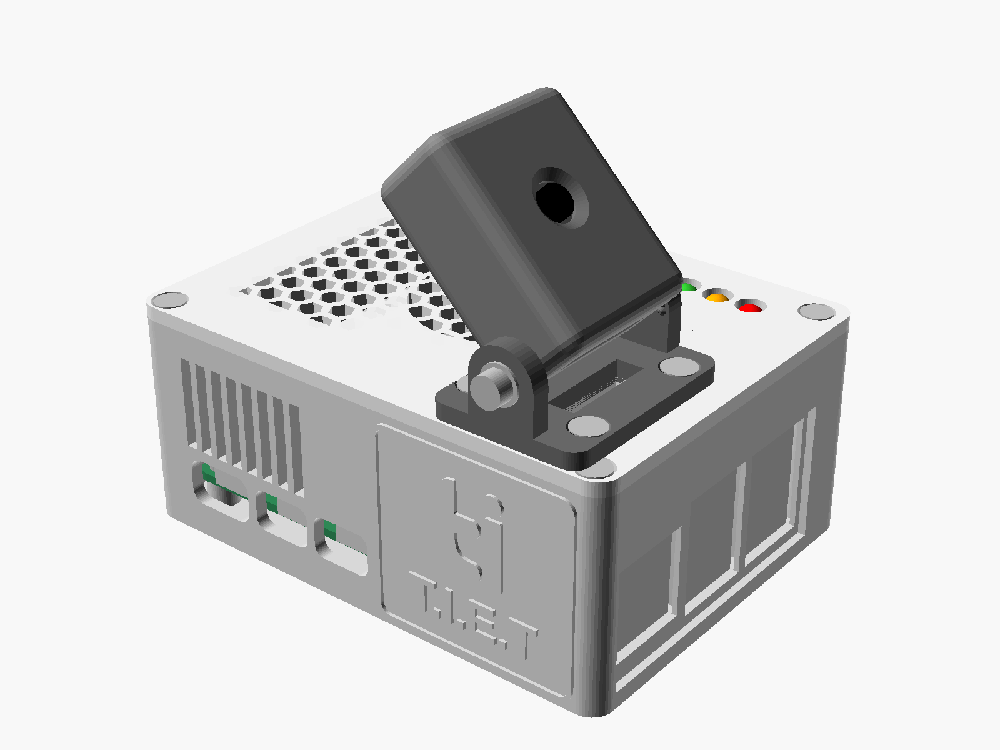

The problem
94–98%
of burglar-alarm activations are false alarms [1].
SENTRIX decides at home and asks the owner first.
Objectives → outcomes
Multimodal AI on the device
One threat index, five levels
Encrypted, signed evidence
Pi 5 unit; case designed
Portal, Desk and owner SOS
Open: Pi decides in ~4 s (aim: 2 s)
Open: detector false alarms
What we learned
• Rules beat any single model.
• Each room needs calibrating.
• Measure alarms, not frames.
How it works (Fig. 1)
Sense
Camera + mic on a Raspberry Pi 5
Recognise: five AI models
YOLO11n [2] · DINOv2 [3] · faces [4] · OSNet [5] · PANNs sound [6]
Confirm: evidence rules
2 of 3 checks · a person in view · two kinds of evidence for Level 4+
Score: threat index 0–1 → 5 levels
Ask: the owner decides (Fig. 2)
Phone, Portal or device. Contacts and the Desk hear only if needed.
Fig. 1 Camera to owner-approved SOS
The product (Fig. 2)


Fig. 2 Alert screen and Pi 5 case
Results (Fig. 3)
Fig. 3 False alarms per normal minute, replay of our 10 labelled videos
Own footage cut false alarms nine-fold over fine-tuning; evidence rules removed the rest.